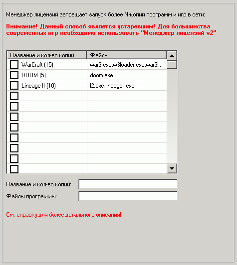

Менеджер лицензий позволяет запретить запуск более чем N-копий приложения в сети.
Внимание! Данный способ является устаревшим!
Для большинства современных игр необходимо использовать "Менеджер лицензий v2"
Обычно его нужно использовать для игр, в лицензионном соглашении к которым указано, что игра не может быть запущена более чем на нескольких машинах.
Для указания таких программ (игр) добавьте строчку с уникальным названием (в нем не должно быть символов круглых скобок!), а в скобочках укажите максимально возможное кол-во копий.
В поле "файлы" укажите через точку с запятой все файлы, которые могут быть запущены самим приложением или которые приводят к запуску данного приложения.
Отметьте "галочку", чтобы данная запись использовалась.
После этого нужно распространить настройки на все машины, где установлены данные приложения.
Теперь при запуске ярлыка с программой проверяется имя запускаемого модуля и если оно совпадает с указанным в полях "файлы", то значит что данное приложение чувствительно к менеджеру лицензий и выдается окошко сбора данных.
Далее ведется сетевой сбор данных о кол-ве запущенных копий данного приложения (фактически проверяется кол-во машин с запущенными процессами, указанными в списке "файлы" - т.е. если хотя бы один процесс запущен, то считается, что приложение/игра на данной машине запущена)
Если кол-во превышает допустимое, то запуск программы/игры будет невозможным.